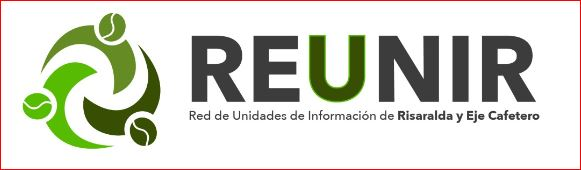
Foro de Gamificación, Feria del Libro de Pereira y el nuevo Sistema de Préstamo Interbibliotecario de Risaralda y el Eje Cafetero.
Haz clic en cualquier tarjeta para saltar a ese momento del año.
Actividades, avance y mesa responsable.
21 de mayo: relevo de Coordinación y Secretaría.
Pereira · agenda, ponentes y asistentes.
Piezas, stand, programación y resultados.
Cifras de la feria con la Cámara de Comercio.
El sistema que conecta a la Red REUNIR.
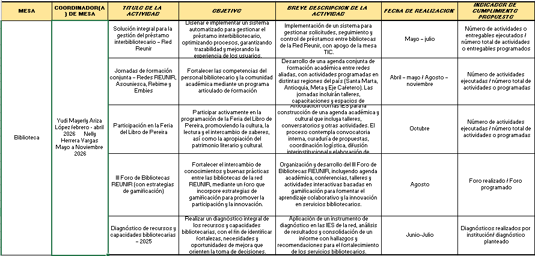
Matriz del plan de acción 2026 · Mesa Biblioteca REUNIR (clic para ampliar)
Coordinación de la mesa: Yudi Mayerly Ariza López (febrero – abril 2026) y Nelly Herrera Vargas (mayo – noviembre 2026).
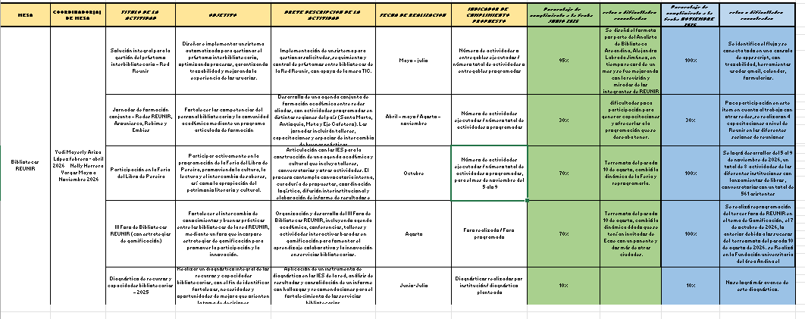
Fuente: captura del seguimiento del plan de acción (clic para ampliar). Alternando entre junio y noviembre se ve cómo avanzó cada actividad de la mesa.
El 21 de mayo se asume la nueva Coordinación y Secretario de REUNIR. La red reconoce con certificado el liderazgo, compromiso y capacidad para fortalecer el trabajo colaborativo, el acceso a la información y el desarrollo de nuestras comunidades.
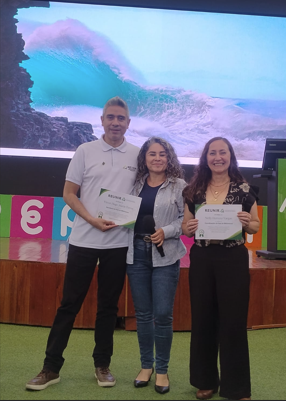
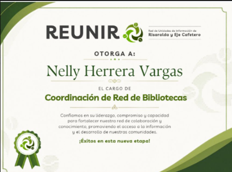
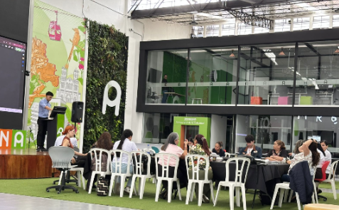
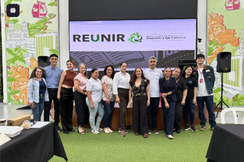
Se comenzó a gestionar todo lo concerniente al desarrollo del Foro: preparación de ponentes, logística, lugar, fechas, editoriales invitadas y formato de inscripción, con la temática en Gamificación.
Promover el conocimiento y la aplicación de estrategias de gamificación en los procesos educativos mediante conferencias, talleres prácticos y espacios de interacción, orientados al diseño de experiencias de aprendizaje innovadoras, éticas e interactivas que fortalezcan la motivación, la creatividad y la participación de los estudiantes.
La gamificación se ha convertido en una estrategia innovadora dentro del ámbito educativo, al incorporar elementos del juego en la enseñanza para fomentar la motivación, la participación activa y el desarrollo de competencias.
El evento generó un espacio de formación, reflexión e intercambio sobre herramientas digitales y recursos educativos, mediante conferencias, talleres y visitas a las mesas curriculares, desde una perspectiva ética y pedagógica.
Equipo organizador, personal de apoyo logístico, docentes, conferencistas, talleristas y responsables de las mesas curriculares.
Computador, video beam o pantalla, sonido, micrófonos, internet, tomas de corriente y transmisión del evento por YouTube.
Sala principal, espacios para los talleres y mesas.
Guías de trabajo, presentaciones, recursos educativos físicos, materiales para actividades prácticas y herramientas digitales de gamificación.
Registro de asistentes, señalización de espacios, control de horarios, organización de los recesos y coordinación de actividades.
Agenda del evento, piezas informativas, identificaciones, materiales de divulgación y refrigerios.
«Jugar también es aprender»: la gamificación como estrategia para bibliotecas más vivas, inclusivas y conectadas, dirigida a docentes, bibliotecarios, estudiantes y público interesado.
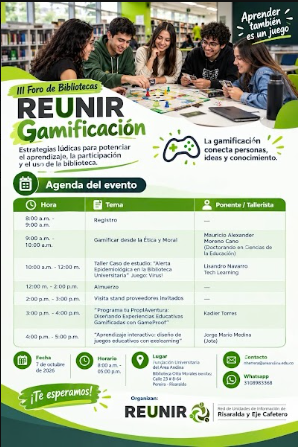
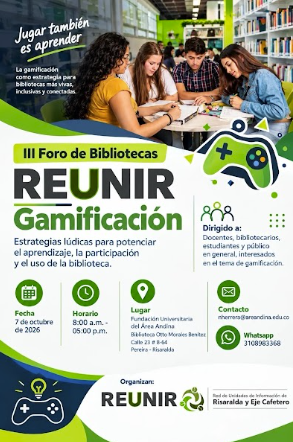
Principios éticos y morales en el diseño de experiencias educativas gamificadas y uso responsable del juego.
Exploración y aplicación de estrategias de gamificación: herramientas, metodologías y posibilidades de implementación.
Recursos y juegos educativos interactivos para apoyar la comprensión de conceptos.
asistentes de las diferentes instituciones que conformamos la Mesa de Bibliotecas.
«El amor, origen de todas las historias»
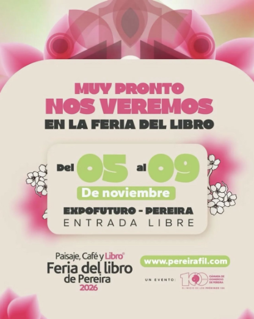
Convocatoria de las actividades de REUNIR y sus instituciones aliadas dentro de la feria.
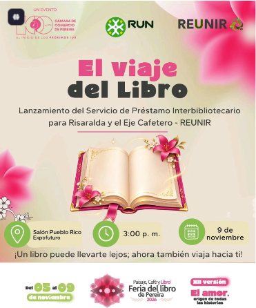
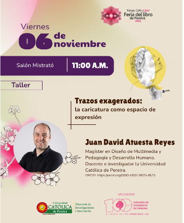
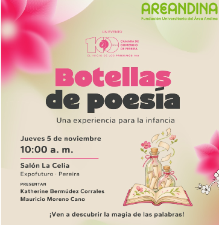
| Fecha | Jornada | Universidad |
|---|---|---|
| Nov. 5 | 10 a. m. – 2:30 p. m. | U. Cooperativa de Colombia |
| Nov. 5 | 2:30 – 7:00 p. m. | U. Antonio Nariño |
| Nov. 6 | 10 a. m. – 2:30 p. m. | U. Católica |
| Nov. 6 | 2:30 – 7:00 p. m. | U. Libre |
| Nov. 7 | 10 a. m. – 2:30 p. m. | UNIMINUTO |
| Nov. 7 | 2:30 – 7:00 p. m. | Visión de las Américas |
| Nov. 8 | 10 a. m. – 2:30 p. m. | Comfamiliar |
| Nov. 8 | 2:30 – 7:00 p. m. | ESAP |
| Nov. 9 | 10 a. m. – 2:30 p. m. | SENA |
| Nov. 9 | 2:30 – 7:00 p. m. | UNISARC |
Turnos de atención del stand · ver captura original
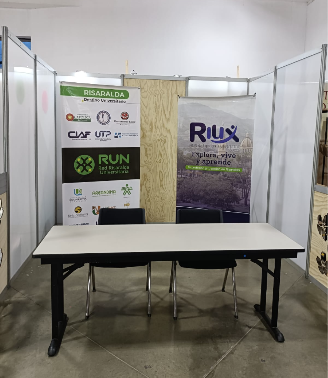
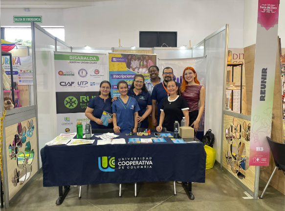
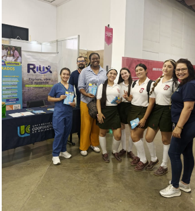
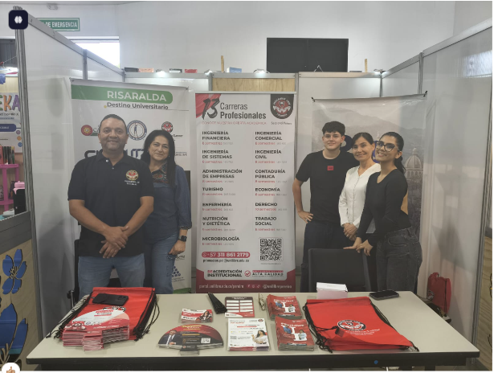
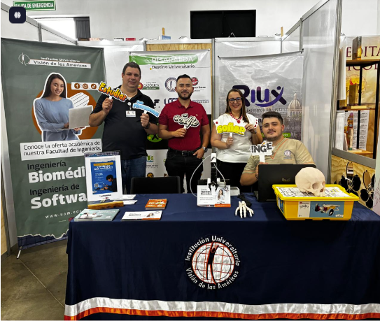
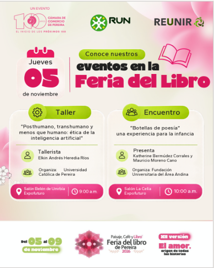
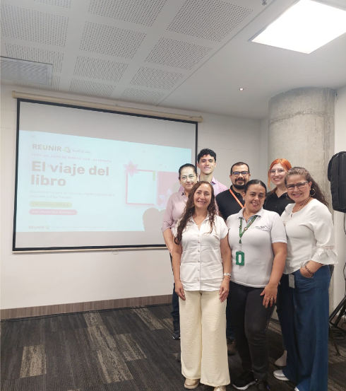
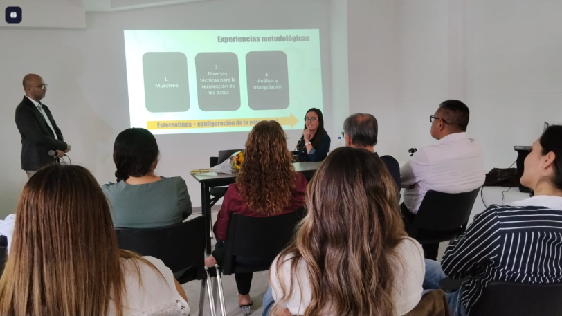
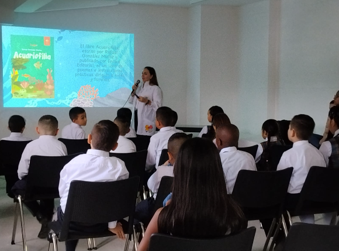
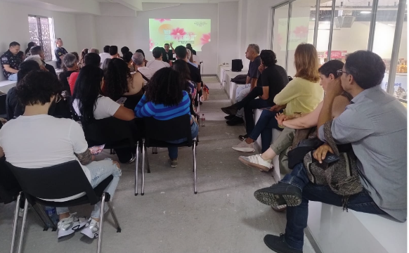
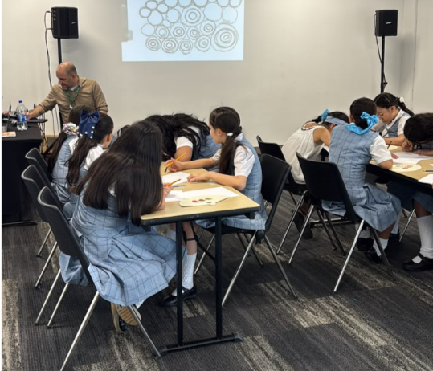
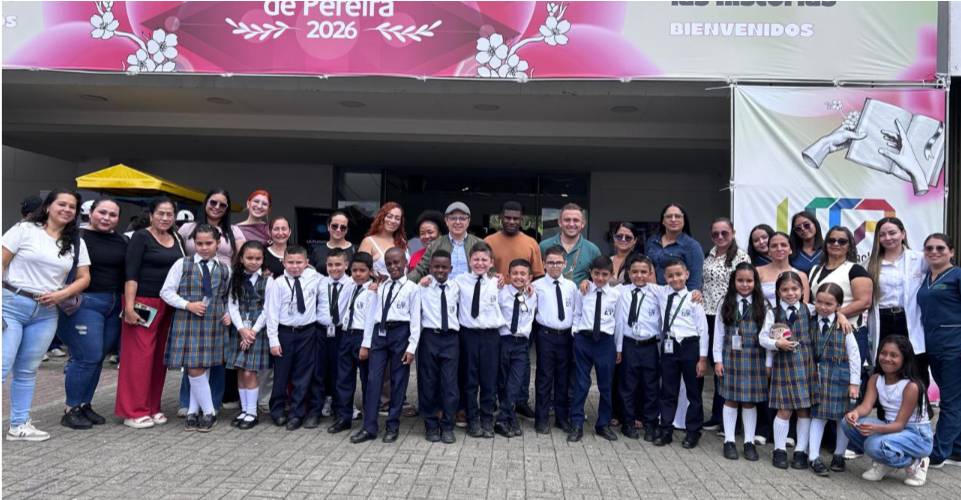
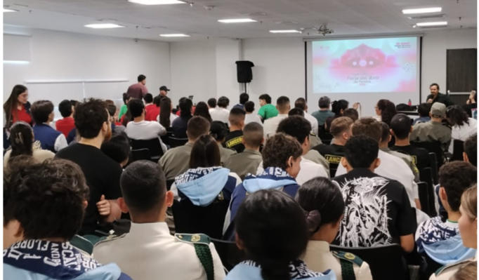
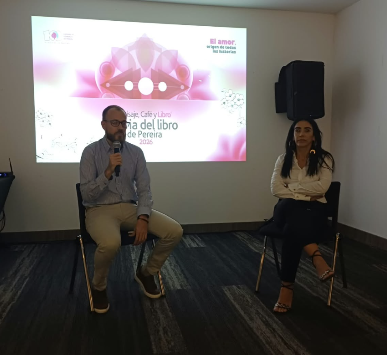
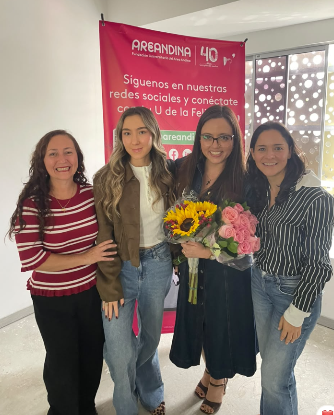
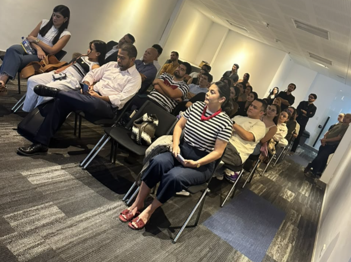
de las 8 actividades REUNIR en la feria.
Estas cifras demuestran que la cultura transforma.
Implementación de un sistema para gestionar solicitudes, seguimiento y control de préstamos entre bibliotecas de la Red REUNIR.
El formato fue diseñado por el Analista de Biblioteca Areandina, Alejandro Labrada Jiménez, en tiempo récord de un mes, y se fortaleció con la revisión de los integrantes de REUNIR.
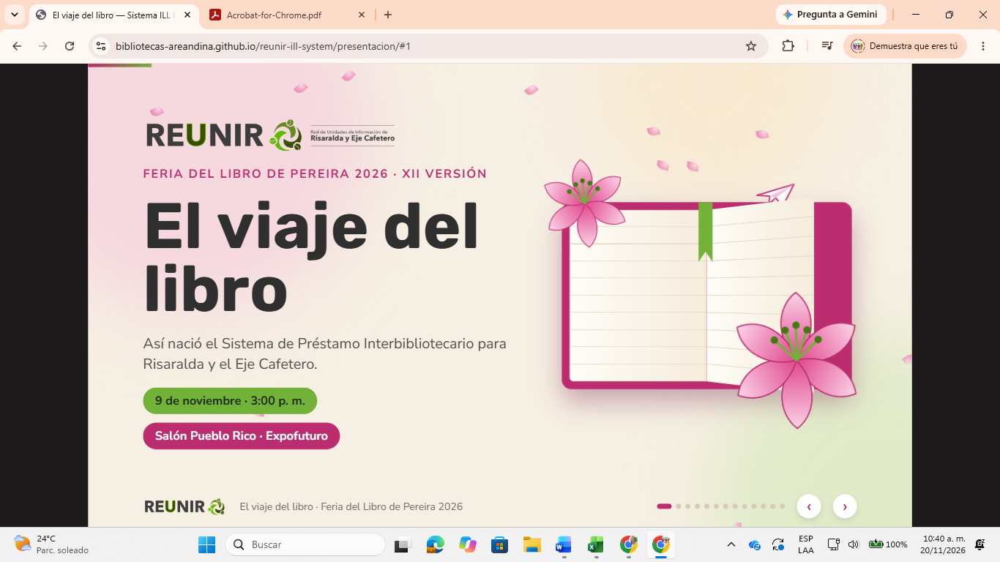
Lanzamiento · 9 de noviembre, 3:00 p. m. · Salón Pueblo Rico, Expofuturo
Compartir conocimiento, conectar comunidades y hacer que un libro pueda viajar lejos.